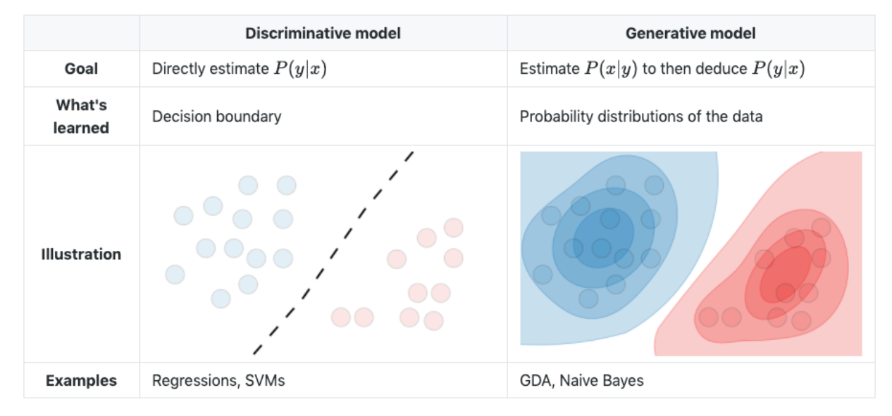
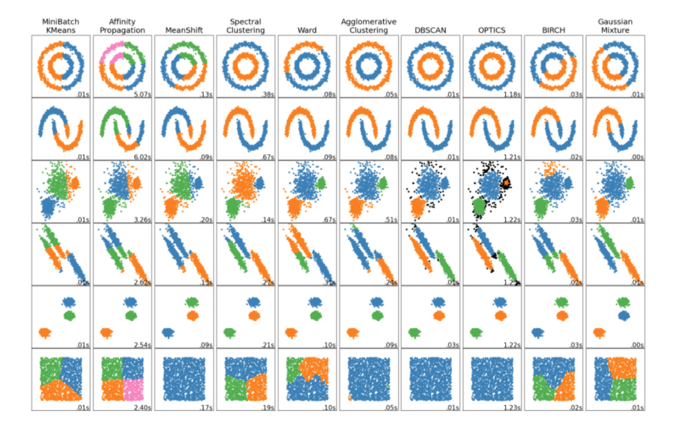
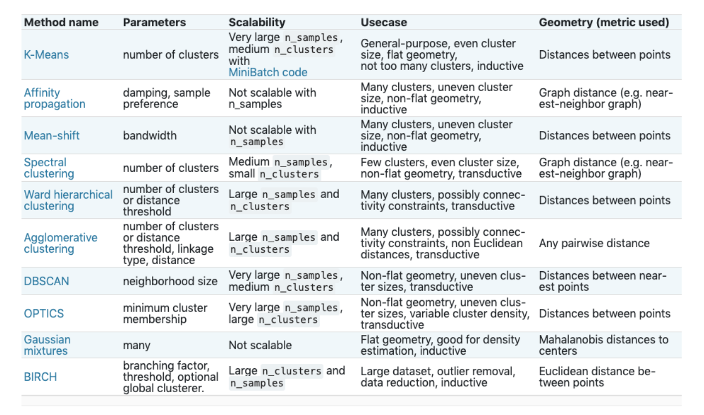
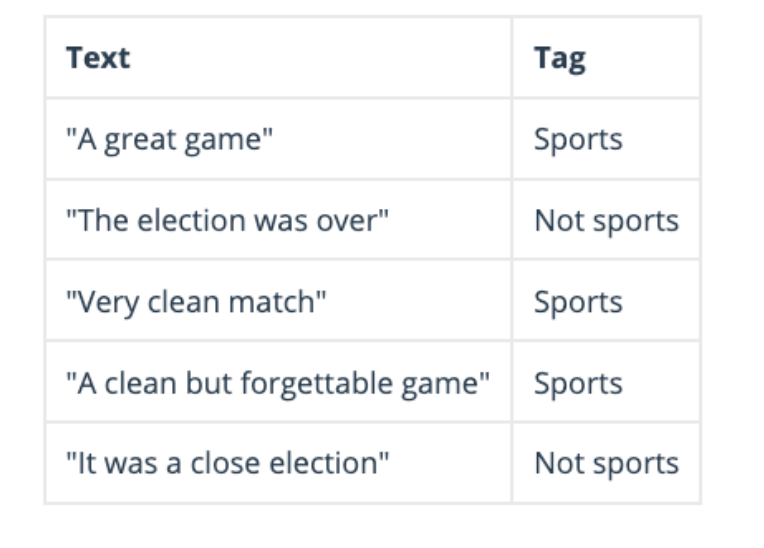

Data Science Handbook
Statistics
P-Value
Statistically significant is detected when the observed p-value from the test statistic is less than the level of significance (i.e. alpha).
Meaning, there is a very low probability of observing by random chance something as extreme or more extreme than what was observed under the assumption that the null hypothesis is true.
P-Value < 0.05 = Reject null hypothesis;
P-Value > 0.05 = Fail to reject null hypothesis;

Note: If we reject the null hypothesis, this indicates strong statistical significance.
Z-Test
The one-sample z-test is used to test whether the mean of a population is greater than, less than, or not equal to a specific value.
For large (50 or more observations) normally distributed samples, normal distribution tests are equivalent to the T-Test.
Requirements for the Z-test:
The mean and standard deviation of the population distribution are known
The mean of the sample distribution is known
The variance of the sample is assumed to be the same as the population
The population is assumed to be normally distributed

T-Test
Statistical test that is used to compare the means of two groups.
When the original (population) distribution is not normal, the one sample t-test is still valid with a large enough sample size.
We perform a One-Sample t-test when we want to compare a sample mean with the population mean.
The difference from the Z Test is that we do not have the information on Population Variance here.
We use the sample standard deviation instead of population standard deviation in this case.
One-Sample T-Test:
Robust to the normality assumption when the sample size is large enough. Assumptions must be met:
Samples are drawn from a Gaussian Distribution
If a two-sample test, both populations are assumed to have the same standard deviation Observations in the sample are independent of one another
Rules of Thumb in Evaluating Assumptions:
If sample sizes are the same and sufficiently large, the t-tools are valid since they are robust to the violation of normality.
If the two populations have the same standard deviation then the t-tests are valid given sufficient sample sizes.
If the standard deviations are different and the sample sizes are different, then the t-tools are not valid and another procedure should be used.
Transformations
If assumptions are not met, look at transforming the data such as taking the logarithmic transformation.
Statistical Power
A power test will tell us how many samples we will need to collect to have a good amount of statistical power.
It tells you how many trials you need to do to avoid incorrectly rejecting the null hypothesis
Power = Type II Error = fail to reject a false null hypothesis.
Power is the probability of not making a Type II error.
Power = the probability that we correctly reject the null hypothesis (e.g. small p-value). or “the probability of rejecting a null hypothesis when it is false”
Low Power = when there is a lot of over lap between the two distributions and we have a small sample size, we have low power.
When we have a lot of power, there is a higher probability that we will correctly reject the null hypothesis.
{kind=link}
ANOVA
Statistical technique that is used to check if the means of two or more groups are significantly different from each other.
Assumptions:
Normality:
Similar to Hypothesis Testing, ANOVA is robust to this assumption.
Extremely long-tailed distributions (outliers) or skewed distributions coupled with different sample sizes (especially when the sample sizes are small) present the only serious distributional problems.
Equal Standard Deviations:
This assumption is crucial, paramount, VERY important.
The assumptions of independence within and across groups are critical.
If lacking, different analysis should be attempted.
F-Test
Hypothesis test to check if Evidence of Inequality of Variance
Central Limit Theorem
The distribution of sample x’s will, as the sample size increases, approach a normal distribution.
The mean (x) of the sample means is the population mean µ.
The standard deviation of the distribution of sample means is sigma/sqrt(n)
Confidence Interval
A 95% confidence interval means that if we were to take 100 different samples and compute a 95% confidence interval for each sample, then approximately 95 of the 100 confidence intervals will contain the true mean value.
CI = mean += Z * sigma / sqrt(n)
Multicollinearity
Occurs whenever an independent variable is highly correlated with one or more of the other independent variables in a multiple regression equation.
Problem: An independent variable that is very highly correlated with one or more other independent variables will have a relatively large standard error.
This implies that the partial regression coefficient is unstable and will vary greatly from one sample to the next.
Multicollinearity can also be detected with the help of tolerance and its reciprocal, called variance inflation factor (VIF). A VIF >= 10 is problematic.
Data Preprocessing
Missing Values
Reasons:
Missing completely at random (MCAR)
Missing at random (MAR)
Not missing at random (NMAR)
How to handle the missing values:
Do Nothing:
Models like XGBoost can deal with missing values by deciding for each sample which is the best way to impute them and learns the best values
Imputation:
Using (Mean/Median) Value
Using (Most Frequent) Value
Using k-NN
Interpolation (Linear/Nearest Neighbors)
Outliers
Identify Outliers
Cook’s Distance:
Measures the effect of deleting a given observation. It represents the sum of all the changes in the regression model when observation “i” is removed from it.
Interquartile Range Method (IQR):
Is a good statistic for summarizing a non-Gaussian distribution sample of data.
IQR is calculated as the difference between the 75th and the 25th percentiles of the data and defines the box in a box and whisker plot.
The IQR defines the middle 50% of the data, or the body of the data
Can be used to identify outliers by defining limits on the sample values that are below the 25th percentile or above the 75th percentile.
Linear Models: Projection methods that model the data into lower dimensions using linear correlations.
For example, PCA and data with large residual errors may be outliers.
Proximity-based Models: Data instances that are isolated from the mass of the data as determined by cluster, density or KNN analysis.
Handling Outliers
Log-Scale Transformation: This method is often used to reduce the variability of data including outlying observation.
Model Selection: Tree based models are less impacted by outliers compared to linear models.
XGBoost and boosting in general are very sensitive to outliers.
This is because boosting builds each tree on previous trees’ residuals/errors.
Outliers will have much larger residuals than non-outliers, so boosting will focus a disproportionate amount of its attention on those points
Categorical Encoding
One Hot Encoding:
Maps each category to a vector that contains 1 and 0 denoting the presence or absence of the feature.
The number of vectors depends on the number of categories for features.
This method produces a lot of columns that slows down the learning significantly if the number of the category is very high for the feature.
Label Encoder:
Each category is assigned a value from 1 through N (here N is the number of categories for the feature.
One major issue with this approach is there is no relation or order between these classes, but the algorithm might consider them as some order, or there is some relationship.
Ordinal encoding:
To ensure the encoding of variables retains the ordinal nature of the variable.
This is reasonable only for ordinal variables.
The transformation looks almost similar to Label Encoding but slightly different as Label coding would not consider whether a variable is ordinal or not and it will assign a sequence of integers.
Binary Encoding:
Converts a category into binary digits.
Each binary digit creates one feature column.
If there are n unique categories, then binary encoding results in the only log(base 2)ⁿ features.
Compared to One Hot Encoding, this will require fewer feature columns.
Explain: for 100 categories One Hot Encoding will have 100 features while forBinary encoding, we will need just seven features.
Data Normalization
Standardize: scaling features by removing the mean and scaling to unit variance
MinMax: Transform features by scaling each feature to a given range [-1,1].
Dimensionality Reduction
Principal Component Analysis
Dimension reduction technique that finds the variance maximizing directions onto which to project the data.
Algorithm to reduce the dimensionality of the data by compressing it onto a new feature subspace, where a subset of the principal components (i.e. eigenvectors) accounts for the highest variance and explains the underlying structure of the overall dataset.
The eigenvectors of the correlation or covariance matrix represent the principal components (directions of maximum variance and determine the direction of the new feature space) and the eigenvalues (scalar) correspond to the magnitude of the eigenvectors.
The eigenvector with the largest eigenvalue is the direction along which the data set has the maximum variance.
After applying the linear PCA transformation, we have a lower dimensional subspace where the samples are “most spread” along the new feature axes.
PCA reduces high dimensional space down to two or three principal components without losing much information.
Machine Learning
Bias Variance Trade-off
Bias: is the difference between the expected (or average) prediction of our model and the correct value which we are trying to predict.
Variance: is the variability of a model prediction for a given data point.
The sweet spot for any model is the level of complexity at which the increase in bias is equivalent to the reduction in variance.
Increasing model complexity tends to increase variance and decrease bias.
However our model complexity exceeds this sweet spot we are in effect over-fitting; while if our complexity falls short of the sweet spot = under-fitting
{kind=link}
Addressing Variance:
Bagging and other resampling techniques can be used to reduce the variance in model predictions.
In bagging (Bootstrap Aggregating), numerous replicates of the original data set are created using random selection with replacement.
Overfitting
Occurs when the model over fits on the training data and does not generalize to the unseen sample population.
Ways to address overfitting:
Get more data
Add regularization
Cross-Validation
Less complex model
Data augmentation (images)
Smaller input dimensionality (remove features)
Regularization
Technique to help reduce overfitting by adding an additional parameter to the loss function, usually the L1 or L2 norm.
In order to help prevent overfitting, we can add in a term into our optimization that keeps the weights small
L1 Regularization (Lasso): “Absolute Value Magnitude”
Lasso Regularizer forces a lot of feature weights to be zero
L2 Regularization (Ridge): “Squared Magnitude”

Cross Validation
To avoid sampling issues, which can cause the training-set to be too optimistic.
Cross-validation is used to protect against overfitting in a predictive model, particularly the case where the amount of data is limited.
K-Fold:
Splits the training data into ‘k’ folds to validate the model on one file while training on the k-1 other folds ‘k’ times. The error is then averages over the fold
Distance Measurements
Euclidean Distance
sqrt((x2-x1)2 + (y2-y2)2)–> Pythagorean Theorem
Manhattan Distance
Calculates the distance between two data points in a grid like path - absolute sum of difference
Cosine Distance
Measure the degree of angle between two documents or vectors.
Cosine value 1 is for vectors pointing in the same direction i.e. there are similarities between the documents/data points.
At zero for orthogonal vectors i.e. Unrelated(some similarity found).
Value -1 for vectors pointing in opposite directions(No similarity).
Mahalanobis Distance
A measure of the distance between a point P and a distribution D.
Why use it?
If the feature vectors are correlated to one another, which is typically the case in real-world datasets, the Euclidean distance between a point and the center of the points (distribution) can give little or misleading information about how close a point really is to the cluster.
Euclidean distance is a distance between two points only. It does not consider how the rest of the points in the dataset vary
Steps:
It transforms the columns into uncorrelated variables
Scale the columns to make their variance equal to 1
Finally, it calculates the Euclidean distance.
Cross Entropy
Measures the difference between two probability distributions for a given random variable or set of events - classification problems
Entropy: is the number of bits required to transmit a randomly selected event from a probability distribution.
A skewed distribution has a low entropy, whereas a distribution where events have equal probability has a larger entropy.
{kind=link}

Loss Functions
Function that takes as inputs the predicted value ‘z’ corresponding to the real data value ‘y’ and outputs how different they are.
{kind=link}
Discriminative vs Generative
{kind=link}
Feature Selection
Filter Based
We specify some metric and based on that filter features.
chi-square test
fisher score
correlation coefficient
variance threshold
Wrapper-based
Wrapper methods consider the selection of a set of features as a search problem.
Sequential Feature Selection
Forward/Stepwise/Backward Selection
Embedded
Embedded methods use algorithms that have built-in feature selection methods.
Lasso
Tree based models
Forward Selection
The procedure starts with an empty set of features [reduced set]. The best of the original features is determined and added to the reduced set. At each subsequent iteration, the best of the remaining original attributes is added to the set.
Backward Elimination
The procedure starts with the full set of attributes. At each step, it removes the worst attribute remaining in the set.
Sequential Feature Selection
Greedy procedure where, at each iteration, we choose the best new feature to add to our selected features based on a cross-validation score.
That is, we start with 0 features and choose the best single feature with the highest score.
The procedure is repeated until we reach the desired number of selected features.
Embedded Feature Selection
Augment with noisy data
Can apply this approach to Tree based models: XGBoost, DecisionTree, RandomForrest
The idea is that we can inject noisy data features into our input training dataset when training model
Here we can perform cross-validation with n-folds where at each n-fold inject noisy features in each iteration and determine the threshold in which the first noisy feature is selected when computing feature importance.
We select the raw features that are less than this threshold and append to a list.
We do this iteratively for each fold and then take a set of the final appended list.
This approach can help minimize model overfitting.
Clustering
Overview (Sklearn)
{kind=link}
Selecting Cluster Algorithm
{kind=link}
K-Means Clustering
KMeans, is an iterative process and aims to partition ‘N’ observations into ‘K’ where observation belongs to the cluster with the closest mean.
By assigning ‘N’ observations to ‘K’ clusters such that within each the average dissimilarity of the observations from the cluster mean (i.e. centroid) is minimized.
Specify the number of clusters ‘k’
Randomly pick k centroids from the data points as initial cluster centers Assign each sample to the nearest centroid (i.e. Euclidean distance)
Move the centroids to the center of the samples that were assigned to it Repeat the third and fourth steps until the cluster assignment converges
{kind=link}
Evaluation of Clusters
Elbow method:
plot number of clusters versus interia
Inertia: measure of how internally coherent clusters are
Cohesion: measures how closely related are objects in a cluster
Separation: measures how distinctly separated a cluster is from other clusters
Calinski-Harabasz:
Also known as the Variance Ratio Criterion
Indicates how well a clustering model defines its clusters, such that the higher the score, the more dense and well separated the clusters are.
Silhouette Coefficient:
Is calculated using the mean intra-cluster distance (a) and the mean nearest-cluster distance (b) for each sample.
The Silhouette Coefficient for a sample is (b - a) / max(a, b)
The best value is 1 and the worst value is -1.
Values near 0 indicate overlapping clusters. Negative values generally indicate that a sample has been assigned to the wrong cluster, as a different cluster is more similar.
Difference between KNN and KMeans
K-NN is a Supervised machine learning while K-means is an unsupervised machine learning.
K-NN is a classification or regression machine learning algorithm while
K-NN performs much better if all of the data have the same scale but this is not true for K-means.
K-means is a clustering machine learning algorithm and used for unsupervised ML tasks.
Hierarchical Clustering
Agglomerative Clustering is a clustering algorithm that builds nested clusters by merging or splitting them successively.
This hierarchy of clusters is represented as a tree (or dendrogram).
Hierarchical clustering using a bottom up approach: each observation starts in its own cluster, and clusters are successively merged together. Hierarchical clustering algorithms aims at optimizing different objective functions:
Ward minimizes the sum of squared differences within all clusters. It is a variance-minimizing approach and in this sense is similar to the k-means objective function but tackled with an agglomerative hierarchical approach.
Maximum or complete linkage: minimizes the maximum distance between observations of pairs of clusters.
Average linkage minimizes the average of the distances between all observations of pairs of clusters.
Single linkage minimizes the distance between the closest observations of pairs of clusters.
DBSCAN
Clustering algorithm views clusters as areas of high density separated by areas of low density.
Clusters found by DBSCAN can be any shape, as opposed to k-means which assumes that clusters are convex shaped.
Affinity Propagation
Affinity Propagation creates clusters by sending messages between pairs of samples until convergence.
The messages sent between pairs represent the suitability for one sample to be the exemplar of the other, which is updated in response to the values from other pairs.
This updating happens iteratively until convergence, at which point the final exemplars are chosen, and hence the final clustering is given.
Machine Learning Algorithms
Linear Regression
Multi-variable linear equations might look like this, where 𝑤 represents the coefficients, or weights, our model will try to learn.
Goal: minimize the residual sum of squares between the observed targets in the dataset, and the targets predicted by the linear approximation.
{kind=link}
Loss Function: To minimize MSE (or L2 Loss) we use Gradient Descent to calculate the gradient of our cost function:
{kind=link}
Logistic Regression
Unlike linear regression which outputs continuous number values, logistic regression transforms its output using the logistic sigmoid function to return a probability value which can then be mapped to two or more discrete classes.
{kind=link}
Loss Function: Cross-Entropy
Same process as Linear Regression, except we replace the sigmoid function with the softmax function.
Why don’t we use MSE for classification problems?
Our prediction function is nonlinear (due to sigmoid transform).
Squaring this prediction as we do in MSE results in a non-convex function with many local minimums.
If our cost function has many local minimums, gradient descent may not find the optimal global minimum.
K-Nearest Neighbor
An iterative clustering algorithm that groups samples which consist of similar characteristics and that are more related to each other than in other groups.
Each group in the data is distributed around a central point called the “centroid” which is the average of the cluster.
{kind=link}
Steps:
Specify the number of clusters ‘k’
Randomly pick k centroids from the data points as initial cluster centers
Assign each sample to the nearest centroid (i.e. Euclidean distance)
Move the centroids to the center of the samples that were assigned to it
Repeat the third and fourth steps until the cluster assignment converges
Support Vector Machines
The goal of support vector machines is to find the line that maximizes the minimum distance to the line.
The decision boundary is defined as: w^Tx - b
{kind=link}
{kind=link}
Kernel Trick: -
Non-linear separable -> kernel mapping -> decision boundary in original space
The “kernel trick” is used to compute the cost function using the kernel because we actually don’t need to know the explicit mapping ϕ, which is often very
{kind=link}
Naive Bayes
Naive Bayes is a probabilistic algorithm that is based on Bayes Theorem.
Bayes’ Theorem basically describes the probability of a feature, based on prior knowledge of conditions that might be related to that feature.
For instance, the conditional probability of B given A.
Our assumption is the probability that the tag of a sentence is Sports given that the sentence is “A very close game”
{kind=link}
Example:
{kind=link}
Classification: Building a classifier that says whether a text is about sports or not
Since Naive Bayes is a probabilistic classifier, we want to calculate the probability that the sentence “A very close game” is Sports and the probability that it’s not.
Then, we take the largest one. Written mathematically, what we want is P (Sports | a very close game) — the probability that the tag of a sentence is Sports given that the sentence is “A very close game”.
{kind=link}
Since for our classifier we’re just trying to find out which tag has a bigger probability, we can discard the divisor —which is the same for both tags— and just compare.
{kind=link}
This is better, since we could actually calculate these probabilities!
Just count how many times the sentence “A very close game” appears in the Sports tag, divide it by the total, and obtain P.
Problem:
“A very close game” doesn’t appear in our training data, so this probability is zero. Unless every sentence that we want to classify appears in our training data, the model won’t be very useful.
So here comes the Naive part: we assume that every word in a sentence is independent of the other ones. This means that we’re no longer looking at entire sentences, but rather at individual words.

This assumption is very strong but super useful. It’s what makes this model work well with little data or data that may be mislabeled. The next step is just applying this to what we had be Results:
In our case, the possible words are [‘a’, ‘great’, ‘very’, ‘over’, ‘it’, ‘but’, ‘game’, ‘election’, ‘clean’, ‘close’, ‘the’, ‘was’, ‘forgettable’, ‘match’].
{kind=link}
Decision Tree
A decision tree algorithm breaks down our data by making decisions based on asking a series of questions.
First, the decision tree algorithm is a top-down approach; we start at the tree root and split the data on the feature that results in the largest information gain.
It is an iterative process and we can then repeat the splitting criteria at each child node until the leaves are pure.
To determine how the features are split, we can use the concept of entropy, which measures the uncertainty
The lower the entropy, the more predictable the class is and for higher entropy values, it becomes more unpredictable.
Next we compute the difference between the entropies before (i.e. parent node) and after the split (i.e. sub-nodes) yields the information gain.
Finally, the objective function is to maximize the information gain at each split, thus the attribute with the highest change in entropy is used as the splitting criteria
Problems with Decision Trees:
Overfitting:
As the decision tree grows and becomes more complex the issue of overfitting arises. Meaning, the model has virtually memorized the training data but will not be expected to perform well with out-of-sample data.
Underfitting:
If the tree is too simple then this could result in underfitting as the learning value is restricted to one level of the decision tree and does not allow the training set to learn the data adequately; a lower complexity decision tree results in high bias.
Methods to address problem:
We want to prune the tree by setting a limit for the maximum depth of the tree.
One way is that we can observe the error vs max_depth plots and also implement Gridsearch to identify the optimal depth.
Random Forest
Is an ensemble based algorithm that’s built on the idea of Decision Trees.
How it Works:
Random Forest works by training an ensemble of decision trees where each tree is constructed from a different sample of the original training data.
Bagging: where we sample the data with replacement.
Random Forest uses this sampling technique to reduce the variance in model predictions, by creating many of these trees, in effect a “forest”, and then averaging them.
The variance of the final model can be greatly reduced compared to a single tree.
Feature Splitting criteria: choose a random set of features for each split and then compute the entropy and information gain to determine which variable to split on. (see decision tree for more)
Strength: works well with missing values and outliers.
Easy to tune for - minimal hyper parameters.
Weakness: Doesn’t offer the same level of interpretability as decision trees
Bagging vs Boosting
Bagging
Sampling with replacement (e.g. some observations may be repeated)
Is a way to decrease the variance of your prediction by generating additional data for training from your original dataset using combinations with repetitions to produce multisets of the same cardinality/size as your original data.
By increasing the size of your training set you can’t improve the model predictive force, but just decrease the variance, narrowly tuning the prediction to expected outcome.
{kind=link}
Boosting
Boosting involves the creation and addition of decision trees sequentially, each attempting to correct the mistakes of the learners that came before it.
Instead of training models separately, boosting trains models sequentially, each new model being trained to correct the errors of the previous ones.
At each iteration (round), the outcomes predicted correctly are given a lower weight, and the ones wrongly predicted a higher weight. It then uses a weighted average to produce a final outcome.
Unlike bagging, the subset creation is not random and depends upon the performance of the previous models: every new subset contains the elements that were (likely to be) misclassified by previous models.
Generally, boosting algorithms are configured with weak learners, decision trees with few layers, sometimes as simple as just a root node.
{kind=link}
Boosting Rounds
The general reason is that on most problems, adding more trees beyond a limit does not improve the performance of the model.
The reason is in the way that the boosted tree model is constructed, sequentially where each new tree attempts to model and correct for the errors made by the sequence of previous trees. Quickly, the model reaches a point of diminishing returns.
ADA Boost
High weights are put on errors to improve at the next boosting step.
XGBoost
Tree based model that uses the concept of boosting.
With boosting, we construct a series of trees that attempt to correct the mistakes of the model before it in the sequence.
The first model is built on training data, the second model improves the first model, the third model improves the second, and so on.
XGboost also uses “Gradient Boosting” – which is an approach where new models are created that predict the residuals of prior models and then added together to make the final prediction so that the loss function is minimized using gradient descent.
Loss function: difference between predicted and actual value
XGBoost API
DMatrix: an internal data structure that is used by XGBoost, which is optimized for both memory efficiency and training speed.
Feature Importance:
Three ways importance is measured:
Weight: The number of times a feature is used to split the data across all trees.
Cover: The number of times a feature is used to split the data across all trees weighted by the number of training data points that go through those splits.
Gain: The average training loss reduction gained when using a feature for splitting.
Feature importance orderings are very different for each of the three options provided by XGBoost
Hyperparameters
Learning Rate: Step size shrinkage used in updates to prevent overfitting. After each boosting step, we can directly get the weights of new features, and eta shrinks the feature weights to make the boosting process more conservative.
Lambda: L2 regularization term on weights. Increasing this value will make the model more conservative.
Alpha: L1 regularization term on weights. Increasing this value will make the model more conservative.
Gamma: Minimum loss reduction required to make a further partition on a leaf node of the tree. The larger gamma is, the more conservative the algorithm will be.
Max_depth: Maximum depth of a tree. Increasing this value will make the model more complex and more likely to overfit.
0 is only accepted in lossguided growing policy when tree_method is set as hist and it indicates no limit on depth.
Beware that XGBoost aggressively consumes memory when training a deep tree.
Subsample: Subsample ratio of the training instances.
Setting it to 0.5 means that XGBoost would randomly sample half of the training data prior to growing trees. and this will prevent overfitting.
Subsampling will occur once in every boosting iteration.
Objective Functions
multi:softmax:
Set XGBoost to do multiclass classification using the softmax objective.
You also need to set num_class(number of classes)
reg:squarederror: Regression with squared loss.
reg:squaredlogerror: Regression with squared log loss
1/2[𝑙𝑜𝑔(𝑝𝑟𝑒𝑑+1)−𝑙𝑜𝑔(𝑙𝑎𝑏𝑒𝑙+1)]^2
All input labels are required to be greater than -1
reg:logistic: Logistic regression
binary:logistic: Logistic regression for binary classification, output probability
Count:poisson: Poisson regression for count data, output mean of poisson distribution
Evaluation Metrics XGB
rmse: root mean square error
rmsle: root mean square log error:
reg:squaredlogerror
metric reduces errors generated by outliers in the dataset.
mae: mean absolute error
mape: mean absolute percentage error
logloss: negative log-likelihood
error: Binary classification error rate.
It is calculated as #(wrong cases)/#(all cases).
For the predictions, the evaluation will regard the instances with prediction values larger than 0.5 as positive instances, and the others as negative instances.
merror: Multiclass classification error rate. It is calculated as #(wrong cases)/#(all cases).
mlogloss: Multiclass logloss.
auc: Area under the curve
map: Mean Average Precision
LightGBM
An open-source gradient boosting library developed by Microsoft LightGBM brings significant improvements to vanilla GBT and can be used to train models on tabular data with incredible speed and accuracy.
Gradient-based One-Sided Sampling
Exclusive Feature Bundling
XGboost Vs LightGBM
The main difference between these frameworks is the way they are growing.
XGBoost:
level-wise: an approach where the trees grows horizontal
level-wise splits based on the contribution to loss of particular branch
LightGBM
leaf-wise an approach where the trees grows vertically.
Leaf-wise splits nodes based on the contribution to global loss whereas.
leaf-wise is mostly faster than the level-wise (e.g 10x faster than XGboost)
Survival Analysis
Survival analysis models time to an event of interest.
It originates from clinical research and is a special kind of regression and differs from the conventional regression task as follows:
The label is always positive, since you cannot wait a negative amount of time until the event occurs.
The label may not be fully known, or censored, because “it takes time to measure time.”
Censoring
Some experimenters could not get a complete measurement for that label. We consider this as “partially observed”
Example: if we look at healthcare data and you have a patient who survived the first 30 days and walked out of the clinic on the 31st day, so his death was not directly observed
Another possibility: The experiment was cut short (since you cannot run it forever) before his death could be observed.
There are four kinds of censoring:
Uncensored: the label is not censored and given as a single number.
Right-censored: the label is of form [a,+∞), where a is the lower bound.
Left-censored: the label is of form [0,b], where b is the upper bound.
Interval-censored: the label is of form [a,b], where a and b are the lower and upper bounds, respectively.
Prepare Training Data:
Survival times are subject to right-censoring, therefore, we need to consider an individual’s status in addition to survival time.
To structure our training data, we need two fields. The first field indicating whether the actual survival time was observed or if was censored, and the second field denoting the observed survival time, which corresponds to the time of death
Hazard Function
Along with the survival function, we are also interested in the rate at which event is taking place, out of the surviving population at any given time t.
In medical terms, we can define it as “out of the people who survived at time t, what is the rate of dying of those people”.
Kaplan–Meier
Since we don’t have the true survival curve of the population, thus we will estimate the survival curve from the data.
KM is a non-parametric statistic used to estimate the survival function from lifetime data. The survival curve is defined as the probability of surviving in a given length of time.
If we choose not to include the censored data, then it is highly likely that our estimates would be highly biased and under-estimated.
The inclusion of censored data to calculate the estimates, makes the Survival Analysis very powerful.
{kind=link}
Accelerated Failure Time
The first step is to express the labels in the form of a range, so that every data point has two numbers associated with it, namely the lower and upper bounds for the label. https://xgboost.readthedocs.io/en/latest/tutorials/aft_survival_analysis.html
{kind=link}
XGBoost Survival Embeddings
Apply Kaplan-Meier on nearest neighbors to generate SA curves for each nearest neighbor segmentation.
{kind=link}
Model Evaluation
Regression
R-Squared
Statistical measure of fit that indicates how much variation of a dependent variable is explained by the independent variable(s) in a regression model.
Problem 1: Every time you add a predictor to a model, the R-squared increases, even if due to chance alone. It never decreases. Consequently, a model with more terms may appear to have a better fit simply because it has more terms.
Problem 2: If a model has too many predictors and higher order polynomials, it begins to model the random noise in the data. Leads to overfitting and produces misleadingly high R-squared values and a lessened ability to make predictions.
Adjusted R-Squared
Modified version of R-squared that has been adjusted for the number of predictors in the model.
Increases only if the new term improves the model more than would be expected by chance.
Decreases when a predictor improves the model by less than expected by chance. The adjusted R-squared can be negative, but it’s usually not.
It is always lower than the R-squared.
Root Mean Squared Error
The square root of the variance of the residuals. It indicates the absolute fit of the model to the data–how close the observed data points are to the model’s predicted values.
Whereas R-squared is a relative measure of fit, RMSE is an absolute measure of fit.
As the square root of a variance, RMSE can be interpreted as the standard deviation of the unexplained variance, and has the useful property of being in the same units as the response variable.
Lower values of RMSE indicate better fit
RMSE is a good measure of how accurately the model predicts the response, and it is the most important criterion for fit if the main purpose of the model is prediction.
Mean Absolute Error
MAE is not identical to root-mean square error (RMSE), although some researchers report and interpret it that way.
MAE is conceptually simpler and also easier to interpret than RMSE: it is simply the average absolute vertical or horizontal distance between each point in a scatter plot and the Y=X line.
In other words, MAE is the average absolute difference between X and Y.
Classification
Accuracy
Accuracy = (TP+TN)/(TP+FP+FN+TN)
Accuracy is a valid choice of evaluation for classification problems which are well balanced and not skewed or No class imbalance.
Warning: Let us say that our target class is very sparse. Do we want accuracy as a metric of our model performance? What if we are predicting if an asteroid will hit the earth? Just say No all the time. And you will be 99% accurate.
Precision
Positive Predictive Rate
Precision = (TP)/(TP+FP)
What proportion of predicted Positives is truly Positive?
Precision is a valid choice of evaluation metric when we want to be very sure of our prediction
Recall
True Positives or Sensitivity
These are cases in which mode predicted True and label is True
Example: When the label is True, how often does the model predict True?
F1 Score
Weighted average of the recall and precision
F1 score sort of maintains a balance between the precision and recall for your classifier.
If your precision is low, the F1 is low and if the recall is low again your F1 score is low.
Example: If you are a police inspector and you want to catch criminals, you want to be sure that the person you catch is a criminal (Precision) and you also want to capture as many criminals (Recall) as possible. The F1 score manages this tradeoff.
Specificity
True negative = (1 - False Negative Rate)
Model predicted no and label is False.
Example: When the label is False, how often does the model predict False
False positives
TYPE 1 Error
Example: Model predicted yes, but the patient didn’t actually have the disease.
False negatives
TYPE II Error
Example: Model predicted no, but the patient actually did have the disease.
AUC Score
AUC measures the entire two-dimensional area underneath the entire ROC curve ( TPR and FPR)
It tells how much a model is capable of distinguishing between classes.
Higher the AUC, the better the model is at predicting 0s as 0s and 1s as 1s.
Example: Higher the AUC, then the better the model is at distinguishing between patients with disease and no disease.
Production Monitoring
A/B Testing
A/B Testing is a way of conducting an experiment where you compare a control group to the performance of one or more test groups by randomly assigning each group a specific single-variable treatment.
Experimental Design → Control and Control Groups
One of the treatments will be the control and the other treatments will be variations on that.
Determine Power of the Test:
The minimum sample size for control and experiment groups that yields the highest statistical power (Beta).
Statistical power increases as alpha increases, thus beta will decrease
beta = 1 - powerRandom sampling is a technique where each sample in a population has an equal chance of being chosen.
Essential that you determine the minimum sample size for your A/B test prior to conducting it so that you can eliminate under coverage bias.
Hypothesis Testing (T-Test):
First, you want to set your alpha, the probability of making a type 1 error. Typically the alpha is set at 5% or 0.05
Next, you want to determine the probability value (p-value) by first calculating the t-statistic Lastly, compare the p-value to the alpha. If the p-value is greater than the alpha, do not reject the null!
Data Drift
Drifts involve a statistical change in the data, the best approach to detect them is by monitoring its statistical properties
Address Model Drift:
You could implement a system that periodically trains your models after some time t, or once it detects a drift you could refresh a model’s weight by extending its training with new data.
Alerts
Recurring, Incremental, Outlier, Abrupt
Adaptive Sliding Window (very common approach)
Works by keeping track of several statistical properties of data within a window that automatically grows and shrinks
Kolmogorov-Smirnov Test
K-S test is nonparametric, meaning doesn’t assume any particular underlying distribution
This test compares your data with a known distribution and test if they come from the same distribution.
Null Hypothesis
Samples are from the same distribution